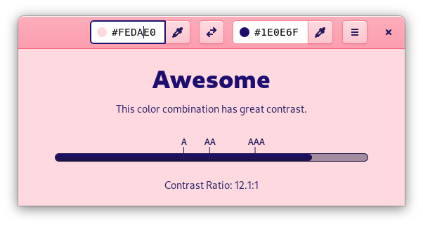
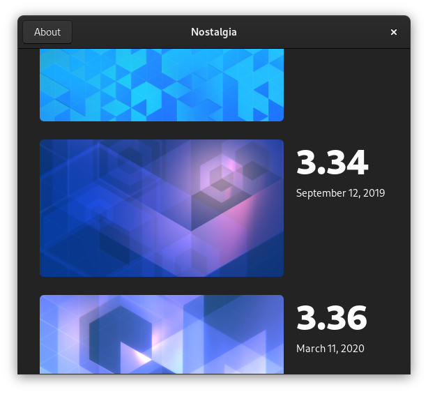
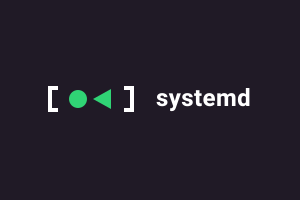

App Icon System—A new platform app icon style optimized for easy adoption by third party apps. We also made design tools to support the new workflow.
LGM 2020 Talk Icon Design TutorialApps
In addition to my work on the GNOME core system and apps, I've also designed a number of third party apps over the past few years.
Contrast—A fun little app to check if the colors in your designs have enough contrast. Designed by me, and developed by Bilal Elmoussaoui.
Get the app Fragments—Finally, a torrent client that isn't a bloated mess. Designed by me, and developed by Felix Häcker.
Get the app
Writing & Speaking
I occasionally write articles and speak at conferences, usually about design, ethical technology, or some combination of the two. These are some of my favorites from the last few years.
Semantic Animation—A holistic approach to designing animated interfaces. I co-wrote an article on A List Apart about it.
I’ve also given talks about semantic animation at conferences and meetups, including FOSDEM 2018.
There Is No “Linux” Platform—On the state of the “Linux” app ecosystem and why vertical integration is the only way forward.
Read ArticleDesign-Driven Free Software—My SFSCon 2017 talk on why Free (as in freedom) software needs to embrace design, why that’s hard to pull off, and how we can get there.
Other Projects
Though my focus is interaction design I also do branding, web development, and illustration (among other things) from time to time.
Nostalgia—A little app I built to make it easy to use Jakub Steiner’s awesome dynamic default wallpapers from past GNOME releases.
Get the app Brand for systemd—Like it or not, everything kind of needs a logo these days, even low-level Linux infrastrucure projects.
Brand Guidelines Dynasty—A tool for generating visualizations of succession timelines, e.g. all the roman emperors (PDF).
Project website